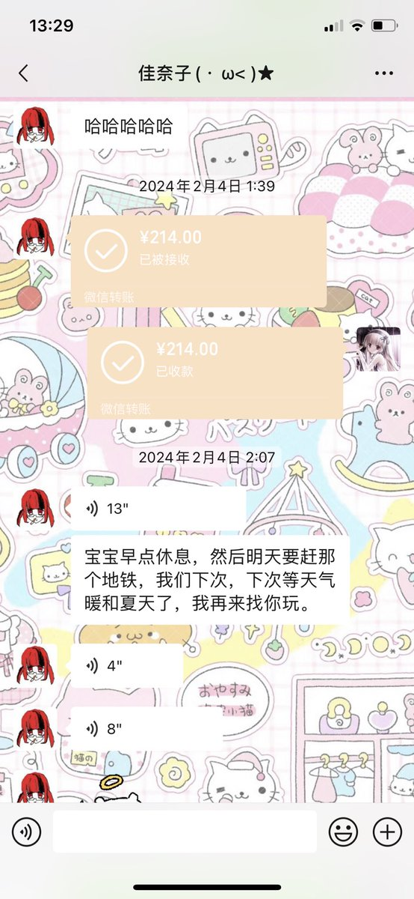
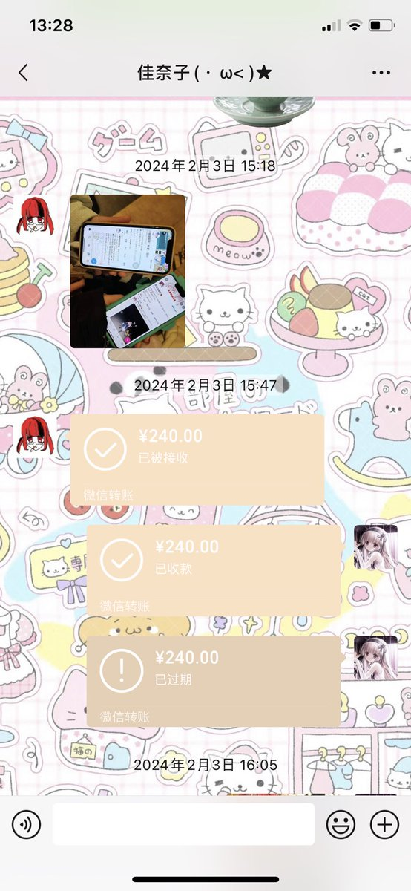

☆猫猫国国王桜夏一世☆
@sakura2333owo
我去找knk玩都是knk掏的钱 她给我买的高铁车票 也送了我很多礼物😞 我和knk认识快三年了 她是南方的 去年二月份她突然来到了北方 我们两个都特别激动于是临时的赶紧面基 其中吃饭车票都是knk掏的钱 我全程都特别不好意思
请您了解一下再分享您所谓的瓜


洇魔女だ
@8964LL
原本不想把这个发出来的，但是有些人说觉得knk没有瓜，要感谢就感谢那个人吧～你的朋友给予你的奖励 https://t.co/TQNF6gAOxc